9.1 Touch (CVD) Peripheral
Guidance on how to add Capacitive Voltage Divider (CVD) also known as Touch peripheral module to your application
The Touch library, which is downloaded as part of installing Harmony 3 Dependancy, is used to configure and generate code related to Touch peripheral.
Once a Touch component is added to Project Graph, user can configure a variety of settings applicable to the Touch library and related components. Upon code generation, users will have a code generated for Touch library and releated components.
MCC Component Addition
Follow the below steps to add the Touch library to any BLE or Zigbee application.-
Add Touch Library Middleware with Needed Components:
-
Touch Component: From the Touch drop-down, Click on "+" on Touch Library middleware from the available resource list to the Project Graph window.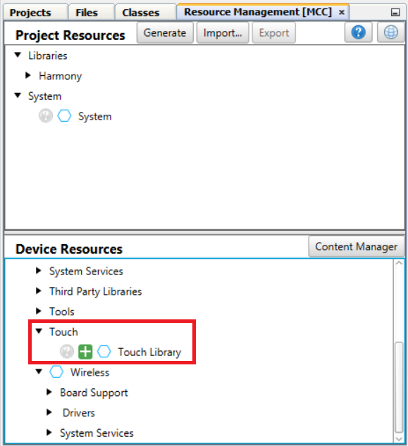
-
RTC Component: A pop-up window appears asking for auto-activation of RTC component. Click Yes
-
ADCHS Component: A pop-up window appears asking for auto-activation of ADC component. Click Yes
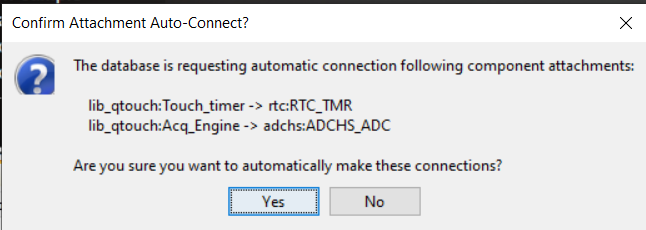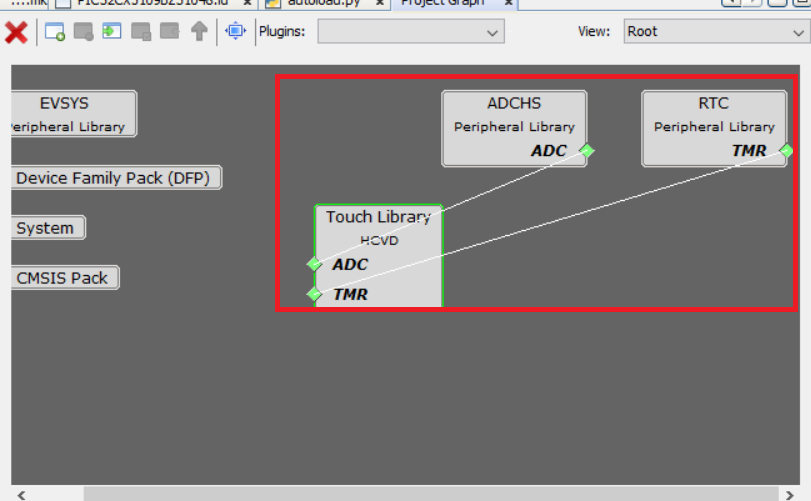
-
- Launch Touch Configurator: Touch parameters can be configured via a custom UI in MCC. Launch the Touch Configurator by going to Plugins > Touch Configuration.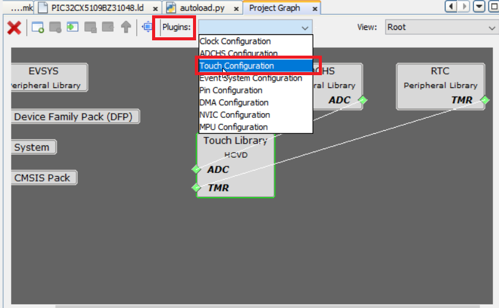
-
Choose Technology and Add Sensor: For this example QT7 Touch Xplained Pro is considered. QT7 Self Capacitance Xplained Pro Extension Kit has two touch buttons and one slider sensor.Attention:
PIC32CXBZ3/WBZ35 family of devices does not support Mutual Capacitance Sensing.
-
Choose Self Capacitance Sensing as the sensing technology.
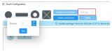 -
Add Buttons: Input "1" in the Number of Buttons box. This example uses only one button available on QT7 board.
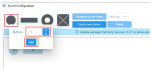 -
Add Slider: Click on the Slider icon. QT7 slider has 3 channels. Input "3" in the Number of Channels box and click Add.
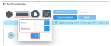
-
-
Select the Configure tab which allows to configure touch properties such as:.
-
Sensor Pins:Tip:Based on the design files, the Y lines should be selected as follows. Select the correct Y lines for buttons and slider as shown below.
Refer to the following WBZ351 Curiosity board XPRO extention and QT7 Xplained Pro documents for connection details.
-
WBZ351 Xplained Pro Design Files
- QT7 Xplained Pro Design Files
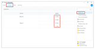 -
- Sensor
Parameter tab allows to configure touch channel properties
such as:
- Oversamples (filter level)
- Digital Gain
- Analog Gain
- Series Resistor
- CSD (additional cycles)
- Prescaler
- Threshold
- Hysteresis
- AKS_GROUP
(adjacent key suppression) 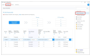
- Common Parameters
- Acquisitiontab
allows the following configureation changes:
- Scan Rate
- Acquisition Frequency.
- Sensor: tab
allows to configure sensor parameters such as:
- Detect Integration
- Away from Touch Recalibration Count
- Away from Touch Recalibration Threshold
- Touch Drift Rate
- Away from Touch Drift Rate
- Drift Hold Time
- Re-burst mode
- Max on Duration
- 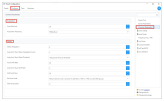
- Driven Shield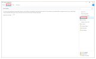
-
-
Tip: For more details on different Touch configuration parameters refer to QTouch® Modular Library Peripheral Touch Controller User's Guide
Code Generation
Once you have finished configuring your project, generate the code. The source files and header files will be added to the project.
Application Development
touch_example.c generated from MCC code generation, will include the sample application implementation. touch_mainloop_example() API implements the periodic Touch measurement initiation. This API needs to be called from app.c task handler. Follow the below steps to include touch application functionality.
- In order to go in sync with wireless task and application task, touch
message to be posted in application task queue whenever the periodic RTC
timerhanlder is triggered. Add the highlighted code in touch_timer_handler()
of touch.c.
void touch_timer_handler(void) { APP_Msg_T appMsg; time_to_measure_touch_var = 1u; qtm_update_qtlib_timer(DEF_TOUCH_MEASUREMENT_PERIOD_MS); appMsg.msgId = APP_MSG_TOUCH_MEAS; OSAL_QUEUE_SendISR(&appData.appQueue, &appMsg); } - APP_MSG_TOUCH_MEAS message ID to be added in APP_MsgId_T of app.h
typedef enum APP_MsgId_T { APP_MSG_BLE_STACK_EVT, APP_MSG_ZB_STACK_EVT, APP_MSG_ZB_STACK_CB, APP_TIMER_ADV_CTRL_MSG, APP_TIMER_BLE_SENSOR_MSG, APP_MSG_TRS_BLE_SENSOR_INT, APP_MSG_TOUCH_MEAS, APP_MSG_STACK_END } APP_MsgId_T; - touch_mainloop_example() API needs to be called from application task to do
periodic measurement of touch inputs.
case APP_STATE_SERVICE_TASKS: { if (OSAL_QUEUE_Receive(&appData.appQueue, &appMsg, OSAL_WAIT_FOREVER)) { if(p_appMsg->msgId==APP_MSG_BLE_STACK_EVT) { // Pass BLE Stack Event Message to User Application for handling APP_BleStackEvtHandler((STACK_Event_T *)p_appMsg->msgData); } else if(p_appMsg->msgId== APP_MSG_TOUCH_MEAS) { touch_mainloop_example(); } - touch_mainloop_example() can be customised to do needed functions by reading
the touch input status when the measurement_done_touch is set. Note: In ble_sensor_touch application demo, touch_mainloop_example() functionality is replaced with APP_TouchMeasurement() API, and does the brightness control of GREEN LED, based on Touch button and Slider input status. This can be taken as reference for customising the application.